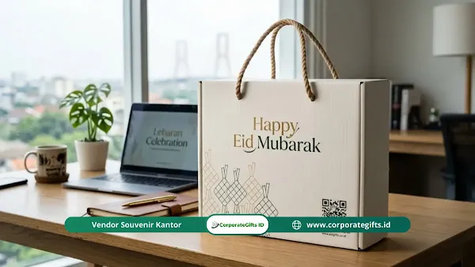

Corporate Gifts ID - Mengirim hadiah menjelang Idulfitri rasanya sudah menjadi rutinitas dan tradisi wajib bagi korporasi di Indonesia guna menjaga silaturahmi dengan rekanan bisnis, instansi mitra, dan karyawan internal. Namun di balik keindahan bingkisan yang dikirimkan, tersimpan sejumlah risiko kepatuhan hukum, etika, dan logistik yang kerap diabaikan.
Poin Kunci Menghindari Kesalahan Hampers Lebaran Kantor:
- Kepatuhan Regulasi Gratifikasi: Batasi nilai parsel instansi publik maksimal Rp1.000.000 agar pejabat penerima tidak terjerat delik gratifikasi KPK.
- Perhitungan Pajak Natura: Catat alokasi bingkisan karyawan sesuai regulasi PPh natura terbaru agar terhindar dari denda pajak fiskal.
- Validasi Sertifikasi Halal: Waspadai kuas bulu babi (boar bristle) dan pengemulsi hewani tak bersertifikat resmi BPJPH pada kue kering.
- Jadwal Logistik Ketat: Serahkan pengiriman antarkota minimal 14 hari sebelum hari H untuk mencegah risiko overload kargo nasional.
Kesalahan hampers lebaran kantor yang paling fatal meliputi pelanggaran aturan gratifikasi Komisi Pemberantasan Korupsi (KPK), pengabaian potongan Pajak Penghasilan (PPh) natura, pemilihan produk dengan titik kritis halal yang tidak disadari, hingga mismanajemen logistik pengiriman barang yang berujung hancurnya paket sebelum tiba di tangan penerima.
Jebakan Hukum Gratifikasi dan Pajak Natura PPh
Memberikan bingkisan mewah sering dianggap sebagai langkah wajar untuk menyenangkan hati mitra bisnis penting. Sayangnya, tindakan gegabah tanpa riset regulasi bisa membuat perusahaan menghadapi masalah hukum serius:
- Regulasi Ketat KPK: Komisi Pemberantasan Korupsi membatasi nilai hadiah maksimal bagi penyelenggara negara sebesar Rp1.000.000 hingga Rp1.500.000 per pemberian per peristiwa. Memberi lebih dari batas kewajaran akan memaksa aparatur negara melaporkannya ke Unit Pengendalian Gratifikasi (UPG).
- Risiko Sanksi Penerima: Pejabat publik atau pegawai BUMN yang terlambat melaporkan hadiah parsel mewah berpotensi terkena ancaman sanksi administratif kepegawaian hingga tuduhan penerimaan suap terselubung.
- Objek Pajak Natura (PMK Perpajakan): Undang-undang perpajakan terbaru menetapkan bingkisan korporat sebagai natura atau kenikmatan yang menjadi penambah kemampuan ekonomis. Bagian keuangan wajib melakukan pemotongan dan pencatatan pajak secara tertib agar tidak menimbulkan temuan pemeriksaan fiskal.
Titik Kritis Halal pada Kue Kering Lebaran
Anda mungkin merasa tenang saat melihat klaim bebas daging babi pada kemasan kue pesanan. Faktanya, ancaman non-halal sering kali bersembunyi pada peralatan produksi dan bahan aditif kimia mikro yang tidak kasat mata bagi orang awam.
Tragedi Kuas Bulu Babi & Emulsifier Non-Halal
Berikut dua titik kritis utama yang wajib ditelusuri ke produsen kue artisan:
- Alat Oles Najis (Boar Bristle): Sebagian besar kuas roti murah di pasar tradisional terbuat dari bulu babi asli karena memiliki helai yang sangat lembut dan tahan panas minyak. Kuas ini sering diberi label samar seperti "pure bristle". Olesan kuning telur yang menggunakan kuas najis otomatis menularkan status haram ke seluruh permukaan nastar dan kastengel.
- Misteri L-Sistein & Emulsifier: Asam amino L-sistein yang berfungsi sebagai pelembut gluten tepung rawan diekstrak dari rambut manusia atau bulu unggas tanpa penyembelihan syar'i. Sementara itu, zat penstabil adonan (emulsifier) seperti mono dan digliserida kerap memanfaatkan lemak hewani non-halal.
- Pentingnya Logo Halal BPJPH Resmi: Jangan sekadar percaya pada popularitas jenama toko kue di media sosial. Pastikan vendor memiliki nomor sertifikat halal resmi yang terdaftar di Badan Penyelenggara Jaminan Produk Halal (BPJPH).

Pentingnya pengemasan struktural kokoh dan manajemen jadwal kirim sebelum puncak lonjakan ekspedisi Idulfitri.
Kesalahan Manajemen Logistik dan Jadwal Ekspedisi
Sebagus apa pun isi hampers yang Anda siapkan, nilainya akan musnah seketika jika paket tiba dalam kondisi toples pecah, kue remuk, atau terlambat sampai setelah kantor mitra bisnis libur cuti bersama.
- Zona Bahaya H-3 Lebaran: Menyerahkan paket ke agen kurir pada H-3 sebelum Idulfitri merupakan tindakan bunuh diri operasional. Pada periode tersebut, gudang sortir kargo mengalami overload hingga 400%, meningkatkan risiko paket tertimbun atau hilang.
- Jadwal Pengiriman Paling Aman: Kiriman antarkota wajib didistribusikan maksimal H-14 sebelum hari raya. Sementara untuk pengiriman lokal satu kota, batas aman terakhir adalah H-7 sebelum masa cuti bersama nasional diberlakukan.
- Proteksi Struktural Kemasan: Jangan biarkan ada ruang kosong di dalam hardbox. Masukkan bantalan pelindung honeycomb paperboard atau airbag sleeve di antara toples kaca untuk meredam getaran mekanis selama di perjalanan.
Tabel Analisis Risiko Kesalahan Hampers Lebaran
Berikut rangkuman audit mitigasi risiko pengadaan parsel perusahaan yang wajib diketahui panitia pengadaan korporat:
| Aspek Risiko | Bentuk Kesalahan Fatal | Dampak bagi Perusahaan | Solusi & Mitigasi Tepat |
|---|---|---|---|
| Hukum & Gratifikasi | Mengirim parsel mewah di atas Rp1,5 juta ke pejabat BUMN/KPK | Pelaporan gratifikasi, risiko delik suap, dan pemeriksaan etika | Batasi nilai bingkisan di bawah Rp1.000.000 dengan fokus fungsionalitas |
| Fiskal & Pajak | Tidak mencatat pajak natura PPh bagi parsel internal staf | Sanksi denda ketidakpatuhan saat audit kantor pajak | Sinkronkan pengeluaran dengan tim akuntansi berdasar aturan natura PMK |
| Kehalalan Makanan | Menggunakan kue dari produsen yang memakai kuas bulu babi | Menyinggung keyakinan relasi dan merusak reputasi brand secara fatal | Wajibkan nomor sertifikasi halal BPJPH dan gunakan kuas silikon sintetis |
| Operasional Logistik | Kirim paket keluar pulau pada H-5 tanpa bantalan honeycomb | Toples kue pecah berantakan dan paket terlambat diterima | Kirim maksimal H-14 serta terapkan rigid box double wall bersekat presisi |
Etika Psikologi Memberikan Hadiah Korporat
Hadiah korporat pada hakikatnya adalah medium komunikasi non-verbal yang merefleksikan kedewasaan dan ketulusan manajemen. Hindari tiga kesalahan etika psikologis berikut:
- Ukuran Logo Terlalu Raksasa: Menyablon logo perusahaan dengan ukuran mencolok di tengah wadah parsel membuat hadiah terasa seperti brosur promosi murahan. Gunakan sentuhan emboss halus atau plakat mini berukuran proporsional agar penerima bangga menaruhnya di ruang tamu keluarga.
- Dosa Besar Praktik Regifting: Jangan pernah memberikan kembali parsel yang Anda terima dari vendor lain ke pihak ketiga. Potensi tertinggalnya kartu ucapan dari pengirim awal atau masa kedaluwarsa kue yang tinggal beberapa pekan akan menjadi aib korporasi yang memalukan.
- Kartu Ucapan Templat Kaku: Tinggalkan kalimat seragam yang dicetak massal dari komputer. Tuliskan nama dan sapaan personal pimpinan unit kerja untuk membangun kedekatan emosional sejati.
Kesimpulan: Menjaga Integritas Pengiriman
Mengirimkan hampers Idulfitri korporat bukan sekadar perkara menghabiskan sisa anggaran divisi kehumasan. Momen ini adalah bagian dari strategi penjenamaan tingkat tinggi yang mempertaruhkan nama baik perusahaan. Rencanakan seluruh rantai pengadaan, verifikasi kehalalan bahan, dan jadwal ekspedisi sejak jauh hari bersama mitra vendor terpercaya agar bingkisan Anda menghadirkan keberkahan sejati tanpa risiko kepatuhan hukum.
FAQ: Pertanyaan Seputar Aturan Hampers Kantor

Ditulis oleh: Arinda Zakia
Senior Corporate Gifting SpecialistSpesialis pengadaan parsel hari raya Idulfitri, kurasi produk artisan halal, dan konsultan manajemen kepatuhan etika cinderamata B2B di CorporateGifts.ID.
Lihat Profil Lengkap & Panduan Lainnya